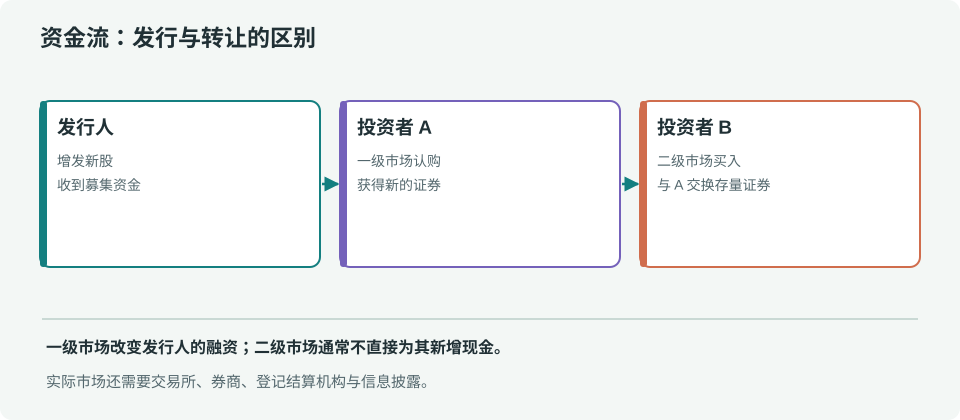
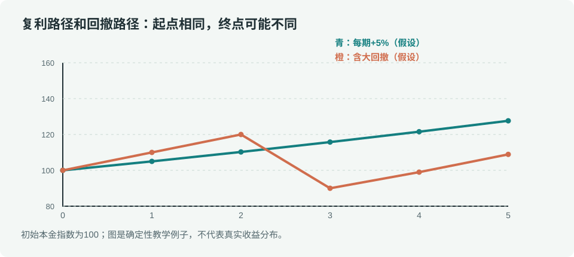

CHAPTER 01 · INVESTMENT RESEARCH
证券投资导论：从价格走向经济权利
投资首先是一条证据链：认清谁拥有何种权利，钱从哪里流来，风险如何改变最终结果。
为什么买入一张证券不等于拥有确定收益
设想你以 100 元买入一份证券：一年后收到 3 元分配，同时市场报价变为 92 元。你实际拥有的是一项会波动的经济权利，而不是“每年稳赚 3 元”的承诺。如果当时卖出，忽略成本的持有期收益为 (92 + 3 − 100) / 100 = −5%。
证券分析的起点不是“价格会不会涨”，而是三个问题：我持有怎样的索取权？现金从谁那里来？什么事件会使原来的判断失效？不同工具给出的答案不同，风险也不能只用近一年的涨跌表示。
学习边界：股票、债券、基金、衍生品都属于证券市场的相关工具，但它们不是银行存款的等价物。分散投资能降低某些个别风险，却不能消除整个市场共同下跌的风险。
公司融资与二级交易：为什么股票成交不等于公司收钱
一家企业计划筹集扩产资金，可以在满足法律和发行条件后发行新的股份。新股发行时，认购款进入发行融资安排；股份上市流通后，投资者通常是在彼此之间买卖既有股份。股票每天在二级市场高频换手，并不意味着公司每天收到同等规模的现金。

重要但容易误解：二级市场仍会通过价格、流动性和融资条件间接影响企业未来融资能力，因此“并不直接收钱”不等于“与公司无关”。
收益必须连同时间、再投资和费用一起计算
总回报可能由价格变动与现金分配组成。若分配能够再投入且每期回报率相同，复利是逐期相乘，而不是每年简单加上相同金额。但真实回报具有不确定性，损失会改变后续复利的本金；交易费、税和通胀又会使名义收益与可使用的购买力分离。

例如 10,000 元按假设的年净回报率 5% 连续复利 10 年，终值约 16,288.95 元。这既不是历史平均值，也不是任何证券的承诺回报。对高波动资产，使用恒定收益率只适合作为理解模型的基准情景。
风险不能简化为“短期涨跌幅”
风险至少包含四类不同问题：价格风险（波动与大幅回撤）、基本面风险（发行人未来现金流不足）、流动性风险（需要卖出时没有合适的对手方）与制度/交易风险（规则变化、交易中断或操作错误）。债券还要关注违约、利率和赎回条款；衍生品要看保证金与潜在杠杆。
假设从 100 跌到 80，损失为 20%；从 80 回到 100 要赚 20/80 = 25%。这说明损失率与修复率不对称。持有更长时间未必能消除重大亏损，因此先约束不可承受的损失，再讨论平均收益。
| 问题 | 研究时需要观察什么 | 常见误判 |
|---|---|---|
| 有没有现金流 | 发行条款、分红或票息、经营现金流 | 把股息或票息视为无风险 |
| 什么会导致下跌 | 盈利、贴现率、信用质量、流动性 | 把低波动误当作低风险 |
| 何时必须变现 | 资金用途、投资期限、交易深度 | 忽略卖出时的折价和限制 |
A 股市场与注册制：信息披露不是价值背书
中国境内证券市场有不同交易所和板块；同是股票，发行上市条件、投资者适当性、价格限制及退市安排也可能不同。2023 年全面实行股票发行注册制，是证券发行制度的重要变化；但注册不意味着监管机构对企业经营质量、投资价值或未来股价作出保证。
理解注册制要从信息披露的可核查性入手：公司披露的业务、财务和风险事项如何影响现金流？估值对增长和资本成本有多敏感？如果预测失败，研究者可以在哪里发现错误？规则与板块安排会变化，学习和交易前应以交易所当期规定为准。
三种研究方法如何互相检验
基本面分析回答“公司未来可能创造多少可分配现金流”；价格与技术研究观察市场参与者怎样交易、流动性与价格如何演变；量化研究把可观察的规则写成可复验的假设，并检验样本外表现、交易成本与风险。三者的证据形态不同，不能用单一图形代替盈利预测，也不能用一次回测代替因果解释。
自我检验
- 用自己的话解释“增发”和“二级市场换手”给公司带来的现金流差别。
- 假定价格跌了 30%，计算回本所需涨幅：1 / 0.7 − 1 ≈ 42.86%。
- 为某只证券写出一个会改变判断的可观察证据，而不是“我觉得它便宜”。
资料来源与适用范围
以下来源用于核对概念和截至标注日期的规则。文中数值例子为构造数据，不能据此推断未来收益。特殊证券、交易场所和规则版本须单独核验。